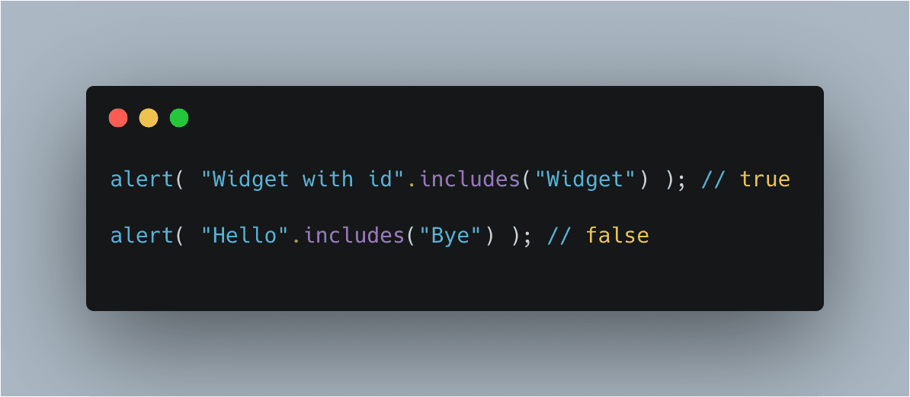
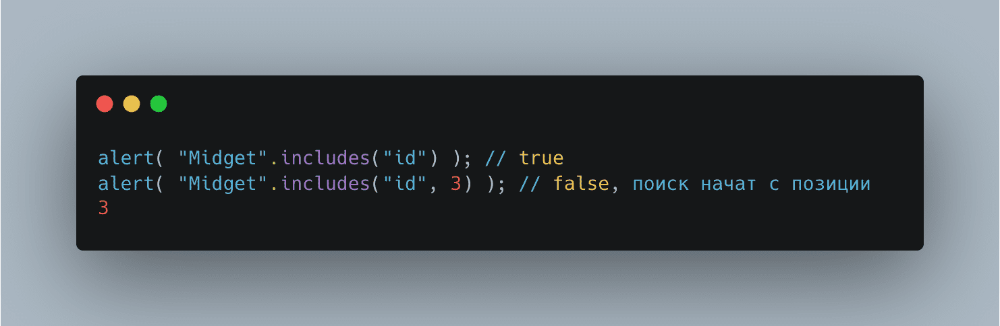
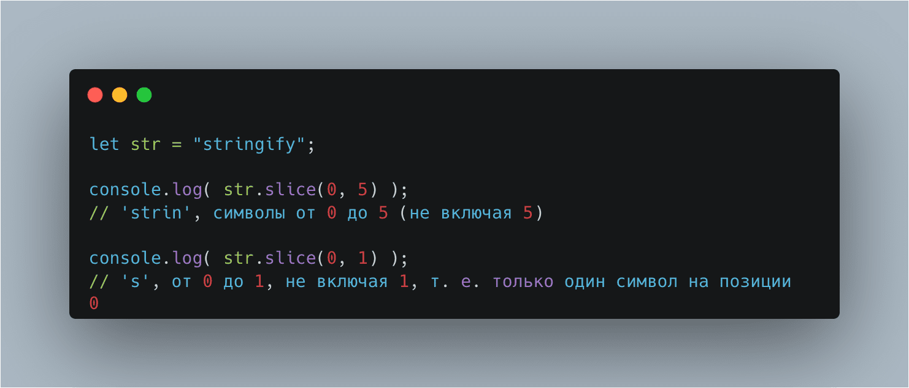
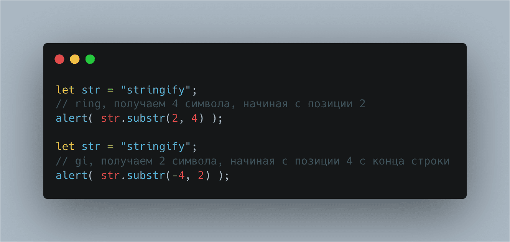
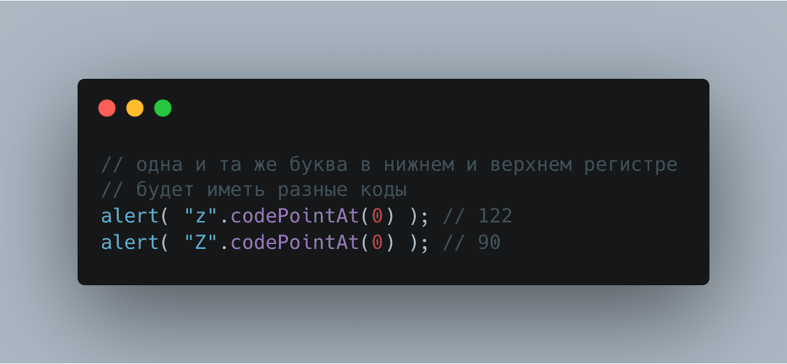
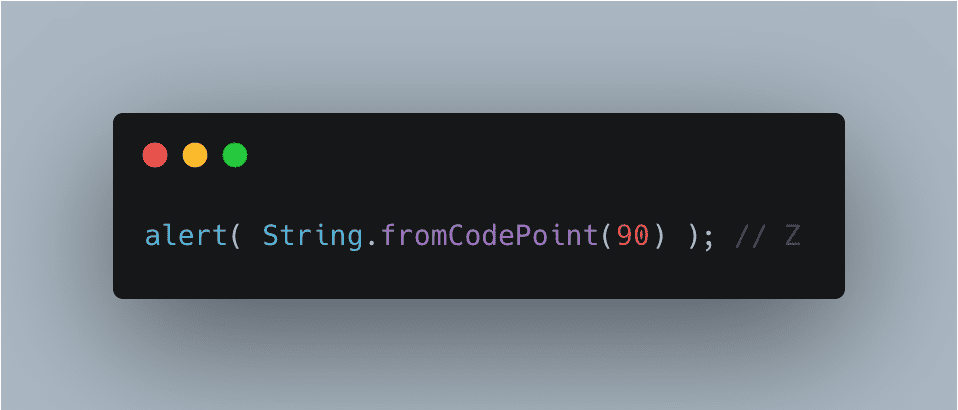

Он ищет подстроку substr в строке str, начиная с позиции pos,
и возвращает позицию, на которой располагается совпадение,
либо -1 при отсутствии совпадений.
Необязательный второй аргумент позволяет начать поиск с определённой позиции.
Например, первое вхождение "id" — на позиции 1. Для того, чтобы найти следующее, начнём поиск с позиции 2:
метод str.includes(substr, pos) возвращает true, если в строке str есть подстрока substr, либо false, если нет.
Необязательный второй аргумент str.includes позволяет начать поиск с определённой позиции:
Методы str.startsWith и str.endsWith проверяют, соответственно,
начинается ли и заканчивается ли строка определённой строкой:
Возвращает часть строки от start до (не включая) end.
Возвращает часть строки между start и end (не включая) end.
Это — почти то же, что и slice, но можно задавать start больше end.
Если start больше end, то метод substring сработает так, как если бы аргументы были поменяны местами.
Возвращает часть строки от start длины length.
Возвращает код для символа, находящегося на позиции pos:
Создаёт символ по его коду code
